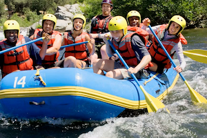

Our purpose is to inspire adventure, build confidence, and connect people with the beauty of nature through safe and memorable white water rafting experiences. Let's dive headfirst into the White Water Rafting world.


Our purpose is to inspire adventure, build confidence, and connect people with the beauty of nature through safe and memorable white water rafting experiences. Let's dive headfirst into the White Water Rafting world.
Founded in 1998 by a group of outdoor enthusiasts, Splash White Water Rafting began with just two inflatable rafts and a passion for sharing the excitement of white water rafting. What started as weekend trips on local rivers quickly grew into a trusted adventure company known for its experienced guides, commitment to safety, and unforgettable experiences. Over the years, RiverQuest expanded its routes, welcomed thousands of guests from around the world, and built a reputation for combining thrilling adventures with a deep respect for nature. Today, the company continues its mission of helping people create lasting memories while exploring the beauty and power of the river.